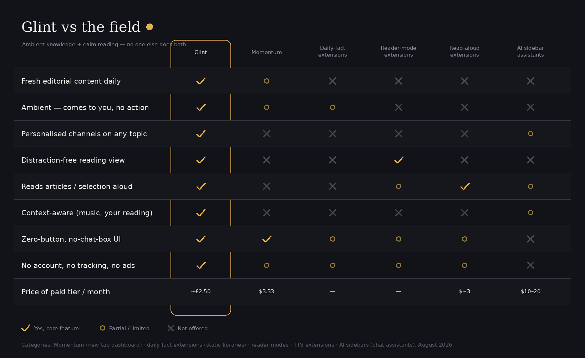

A quiet card while you work: something genuinely interesting, freshly written each morning. Hover to keep it. Click to dismiss. Or just let it leave.
Press Alt + Shift + F on any article. The clutter melts away — ads, sidebars, popups — leaving warm, paper-toned pages set in comfortable type. Press the speaker and it's read aloud, from wherever you click. Esc brings the web back.
Personal channels are written for you the moment you create them — five fresh facts a day about whatever you're into.

No account. No tracking. No analytics. No chat box. Glint never interrupts a meeting, never shows the same thing twice, and never asks for more attention than one small card deserves.
Read the two-minute privacy policy — it fits on one page because there's nothing to disclose.